Nxs
Board Game Arena 官方规则文档
For tips on how to play NXS, see Tips_nxs
Official Website and Full Rules
Overview
- NXS is pronounced "nexus"
- NXS starts with two fleets of ships facing off.
- While you can capture your opponent's ships, the goal of NXS is to capture enough points of territory to win before your opponent captures enough of yours.
- To do this, you must invade and hold your opponent's territory.
- Each piece represents a sailing ship.
Brigantine symbol
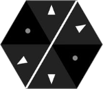
Brigantine graphic
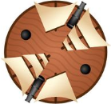
Game play
- Each turn you will:
- Select any piece of your colour and Move OR Capture.
- Select any piece of your colour and Rotate.
Movement
- Pieces can move in the direction of their arrows.
- They can move as far as their number of dots.
- A piece cannot move through another piece.
- Pieces can move in a straight line in the direction of their arrows (which represent sails).
- They can move as many spaces as they have dots.
- Note: pieces must maintain their original facing as they move.
- You cannot rotate a piece as it moves.
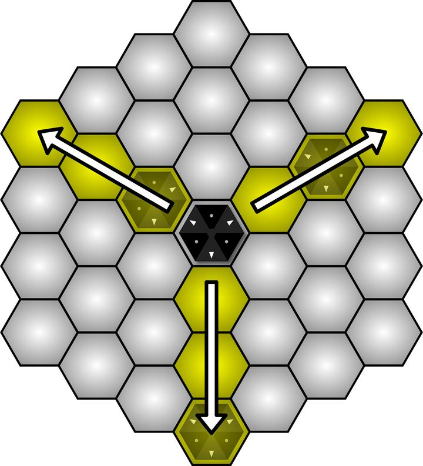
Captures
- Pieces capture by making a diagonal jump in the direction of their marked corners.
- NXS pieces have some of their corners marked with bold lines.
- These lines represent an attack direction (cannon).
- The captured piece is removed from the board and replaced with the capturing piece.
- The capturing piece maintains its orientation.
- Do not rotate pieces when capturing.
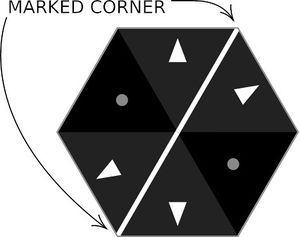
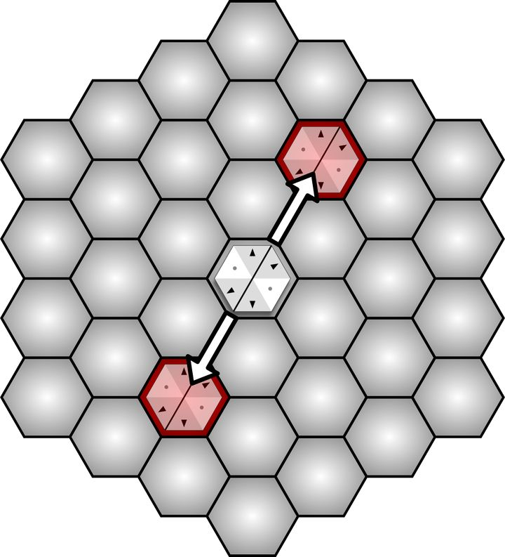
- In the game interface, when you click on your piece the hexes will be highlighted in yellow to indicate legal moves and red to indicate legal captures.
- Click the piece again to deselect it.
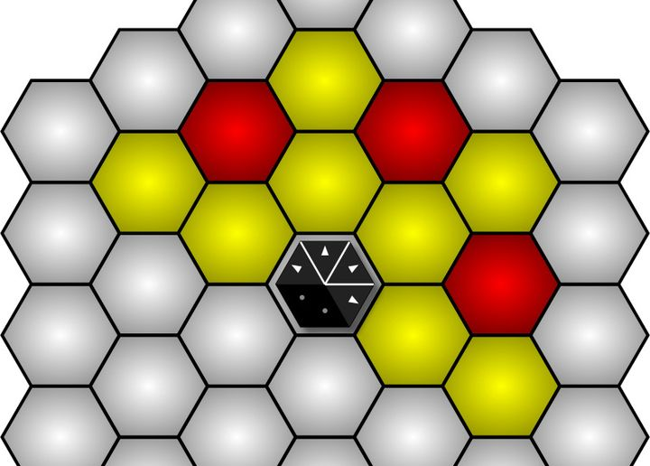
- You cannot jump over an enemy piece when capturing.
- The pieces highlighted in pink are safe from the piece marked a because it cannot jump over the piece marked b.
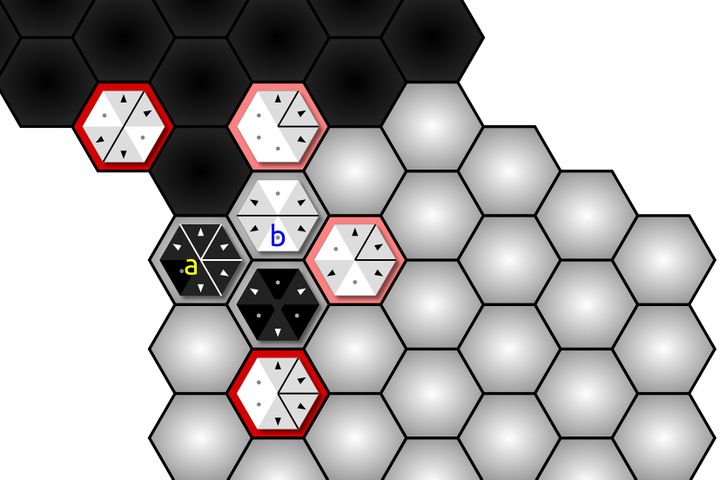
- The Merchant Ship piece cannot capture (it has no marked corners), but it cannot be captured.
- You will find that it is the most valuable ship on the board.
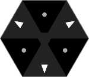
Rotation
- On the second part of your turn, you must rotate one of your pieces by one facing, right or left.
Territory
- Territory is captured in one of three ways:
- Occupy an enemy hex,
- Make an unbroken line between your piece in enemy territory and your board edge,
- Like between b and the black board edge.
- Make an unbroken line between two pieces in enemy territory.
- Like between a and b below.
- In the example below, no territory is captured because there is a white piece (c) between a and the black border.
- Captured spaces are only counted once
- In the game interface, captured territory is marked with dots.
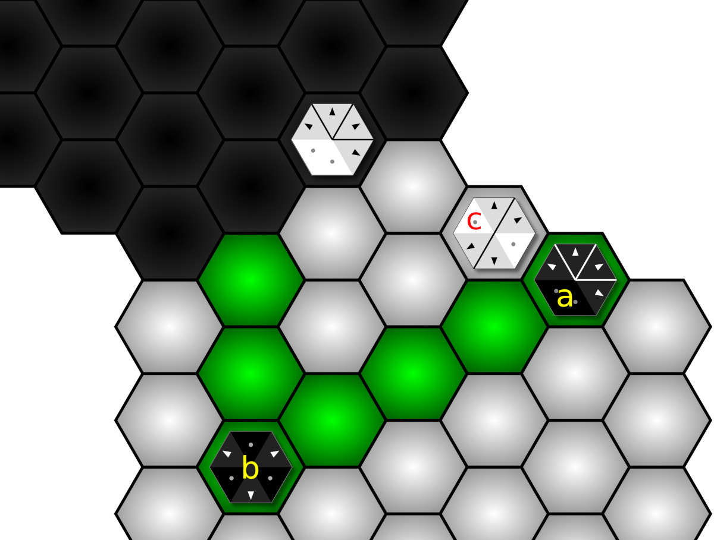
- Here are some more examples of territory capture, the number of spaces captured is listed on the image.
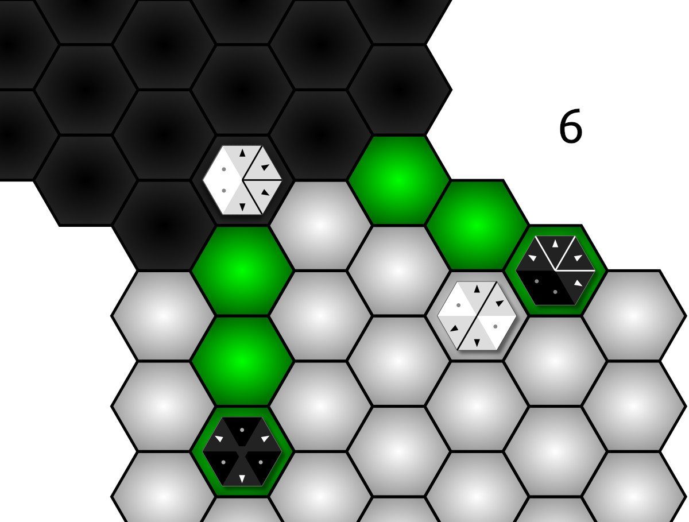
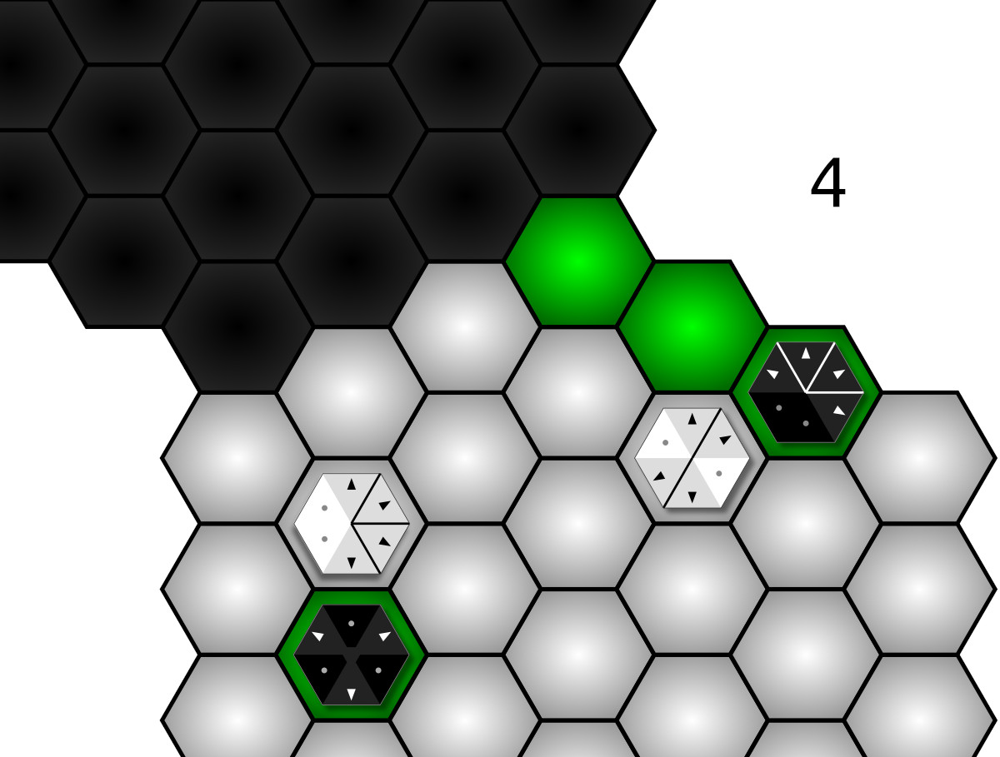
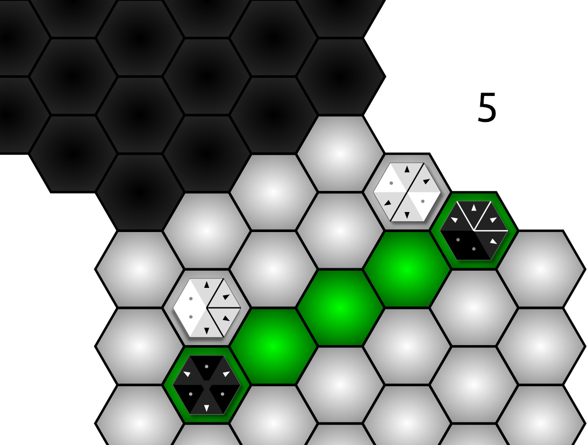
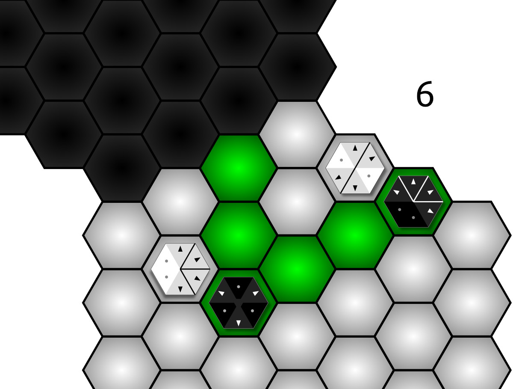
Game end
- Game play continues until one player captures enough enemy territory to win.
- Default: 10 hexes.
FAQ
Why do I have to rotate a piece?
- Rotating a piece is a definitive end to your turn.
- When you are playing someone in person, allowing someone to pass on the rotation phase causes long game pauses while you are waiting for your opponent to rotate and they forgot to say that they want to pass
- It happened a lot during testing.
- Making the rotation mandatory bypasses this, and also makes the board positions more dynamic which can be important in the end game.